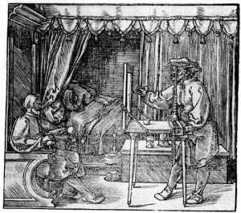

Thirty years ago the study of projective geometry would have seemed somewhat like the study of Latin: good for the brain and a means to keep in contact with the ancients. Today, however, projective geometry is a popular subject with mathematicians and computer scientists. This is due to the new applications to computer vision and to the fact that geometry and geometric thinking are again on the upswing. Moreover, computer science has returned the favor by providing powerful tools for the visualization and diffusion of mathematics. Interactive figures, animations, and linked web pages allow us to present mathematics and, most particularly, geometry in a way that was unthinkable thirty years ago.
In this course, we shall study projective geometry from a modern perspective using modern tools. A lot of effort will be spent in studying general unifying ideas in geometry such as group actions, homogeneous spaces, invariants, duality, compactification, complexification, and metric spaces. It will be an advantage to the student of geometry to be armed with these ideas before he or she tackles other more complex ideas such as connections, fiber bundles, spinors, and twistors. On the other hand these abstract concepts will be illustrated by geometric constructions of great simplicity. These constructions become alive through their presentation as interactive figures. Moreover, as these constructions, and indeed the whole course, are available through the internet, the student can make better use of the allotted class time to ask questions, solve problems, and expand his or her horizons.
We now turn to a short description of the subject matter of this course. Today we will deal only with the most elementary and visual ideas, but I think it will be enough to give you an idea of what lies beyond.
1Perspective
The architects and painters of the Renaissance asked themselves how to represent a three-dimensional object on a two-dimensional surface. Computer scientists today ask how to make a computer recognize that two distinct images represent the same object from different points of view. In answer to the first question, Leone Battista Alberti (1404–1472) proposed the following procedure: interpose a glass screen between yourself and the object, close one eye, and mark on the glass the points that appear to be on the image. The resulting image, although two-dimensional, will give a faithful impression of the three-dimensional object.

Alberti’s method has been described as projection and section: first we draw the sheaf of light rays entering the eye from the object and then we cut with the glass screen. Since we are free to move our eye and the position of the screen, we have many different two-dimensional representations of the three-dimensional object. An interesting problem, raised by Alberti himself, is to recognize the common properties of all these different representations. This question is the same computer scientists ask today.
2Points and lines at infinity
The method of projection and section is peculiar in that there are points on one representation that seem to have no image in another. For example, in the following two-dimensional picture, the point B seems to have no image.
The classical way of dealing with this difficulty is to decree the image of B to be the point at infinity on the line m. This notion of ideal points can be made rigorous, but we will leave that for future lectures (see chapter two of the course notes). The same phenomenon occurs in the following figure, but there a whole line of points on the source plane has no image on the target plane. The image of this line is said to be the line at infinity on the target plane.
The line together with its ideal point at infinity will be termed the projective line, and the plane with its ideal line at infinity will be termed the projective plane.
Invariants
Whenever we have a class of transformations, in our case those obtained through projection and section, it is interesting to study what properties are or are not preserved by them. The properties that are preserved are called invariants and most of mathematics and physics consists in their study.
The problem posed by Alberti is to determine the invariants of perspective. It is clear that distances are not preserved, nor angles, nor areas. Parallel lines are not taken to parallel lines. This capacity for distorting images seems to make perspective hard to study. But not all is distorted: lines go to lines and if a point lies on a line, then in any other point of view the corresponding point will lie on the corresponding line. We say that incidence is preserved. This may not seem like much, but it is enough to develop a mathematical theory of great power and beauty.
The two classical results depending solely on the notion of incidence are the theorems of Pappus and Desargues. Before stating them, let us fix some notation. The line joining two points X and Y is denoted by XY while the point of intersection of the lines a and b is denoted by a·b.
If A, B, C and A′, B′, C′ are two triples of collinear points, then the points AB′·BA′, AC′·CA′, and BC′·CB′ are collinear.
If two triangles are in perspective, then their corresponding sides intersect in three collinear points.
3Projective transformations
In order to study the invariants of perspective in more detail, we simplify the situation by considering a class of transformations from the real line onto itself. These transformations can be described as follows: think of the real line inside the plane, draw a second line m and two points P and Q as in the figure below. If X is a point on the real line, its image T(X) is given by the intersection of the real line with the line passing through the point Q and the intersection of XP and m. If this line is parallel to the real line we say that the image of X is the point at infinity.
By moving the line m or the points P and Q we obtain many different transformations. A toy version of Alberti’s problem is: what are the invariants of this type of transformations?
A preliminary remark that seems almost trivial, but is actually very important, is that any quantity that is invariant under these transformations is invariant under their composition. Let us agree to call all possible transformations that can be obtained by the construction above or by composition of such transformations projective transformations.
To see how a projective transformation may move things around, we first consider two lines with three points on each. It is not hard to see that by combining two perspectives it is possible to transform the three points on the first line to the three points on the second line. The construction is given by the figure below.
Applying this construction twice to come back to the original line, we see that a projective transformation can take three prescribed points to three prescribed points. In fact, even more is true:
If A, B, C and A′, B′, C′ are two triples of distinct points lying on a line, there is one and only one projective transformation that sends A to A′, B to B′, and C to C′.
The downside of this result is that there can be no invariant of projective transformations involving just three points. Let us now try with four points.
4Cross ratios
Take four points A, B, C and D on the extended real line (infinity is added as an ideal point). By the first fundamental theorem, there exists one and only one projective transformation T that sends A to infinity, B to zero, and C to one. The number T(D) is the cross ratio of the four points. It is usually denoted by [A, B, C, D]. It is not hard to see that the cross ratio of four points is invariant under projective transformations. That is to say, that if A, B, C and D are four points and S is a projective transformation, then [A, B, C, D] = [S(A), S(B), S(C), S(D)].
We reason thus: if T is the one and only projective transformation that sends A to infinity, B to zero, and C to one, [A, B, C, D] = T(D). On the other hand if R is the one and only projective transformation that sends S(A) to infinity, S(B) to zero, and S(C) to one, [S(A), S(B), S(C), S(D)] = R(S(D)). Since the composition TS−1 also sends S(A) to infinity, S(B) to zero, and S(C) to one, we have that TS−1 = R and R(S(D)) = T(D).
Of course, it would be useful to compute cross ratios. It turns out that the formula is quite simple: if x0, x1, x2, and x3 are the coordinates of four points on the extended real line, then
Cross ratio is the projective analogue of distance in Euclidean geometry. It is the invariant that defines the geometry:
If a transformation from the projective line to itself preserves cross ratios, then it is a projective transformation.
In the nineteenth century there was a backlash against analytic geometry and some geometers decided that the second fundamental theorem as stated above was not geometric enough. To improve it, they made use of a geometric construction for quadruples of points with cross ratio equal to −1. Such quadruples are called harmonic. The construction below lets you experiment: for example, note what happens when C is the midpoint of the segment AB.
If a transformation from the projective line to itself preserves harmonic quadruples, then it is a projective transformation.
5Projective transformations in two dimensions
We now consider transformations of the projective plane (i.e., the plane plus the line at infinity) that are analogous to those we already considered on the projective line. Compositions of these transformations will be called projective transformations (of the projective plane).
Like in the one-dimensional case, we are interested in knowing how projective transformations move points around. Since these transformations preserve lines, we cannot expect that three prescribed points be taken to three prescribed points: the first three points may be collinear and the others not. However, if we say that four points are in general position when no three of them lie on the same line, we have the following result:
If two quadruples of points A, B, C, D and A′, B′, C′, D′ are in general position, there exists a unique projective transformation of the plane that takes A to A′, B to B′, C to C′, and D to D′.
In two dimensions it is the property of taking lines to lines that characterizes projective transformations of the plane.
If a bijection from the projective plane to itself sends lines to lines, then it is a projective transformation.
The principle of duality
One of the most interesting aspects of projective geometry in dimensions higher than one is the principle of duality. This principle asserts that theorems in projective geometry come in dual pairs: it suffices to interchange the words line and point and to change the intersection of two lines for the line determined by two points and vice versa. For example, the dual of Desargues’ theorem is its converse and the dual of Pappus’ theorem is as follows:
If a, b, c and a′, b′, c′ are two triples of concurrent lines, then the lines (a·b′)(a′·b), (a·c′)(c·a′), and (b·c′)(c·b′) are concurrent.
This “magic” principle is at heart nothing else than a geometric interpretation of the duality of vector spaces.
6Projective geometry of conics
A conic section is, by definition, the image of a circle under a perspectivity whose center is the vertex of the cone. By moving and tilting the plane, we may obtain an ellipse, a parabola, and a hyperbola, but also a point, a line, and a pair of intersecting lines. These last conic sections are usually termed degenerate. Since the nondegenerate conics are all equivalent to the circle under projective (and even perspective) transformations, we may think that the projective geometry of conics is rather dull. Far from that, by forgetting the differences between circles, ellipses, hyperbolas, and parabolas, we are able to concentrate on their common properties and gain a deeper understanding of them.
As a consequence of the projective equivalence of conics, any result of a projective nature that we can prove for the circle will hold for all conics. An easy example of such a result is the following
Let A, B, C, D be four points on a conic. If E and F are two points on the same conic that are different from the previous four points, the cross ratios [EA, EB, EC, ED] and [FA, FB, FC, FD] are equal.
We remark that the cross ratio of four lines passing through a point X is defined as the cross ratio of the four points obtained by intersecting these lines with an arbitrary line not passing through X.
Projective duality not only interchanges points and lines, it interchanges the set of points lying on a curve for the set of lines tangent to the curve. If we replace the point conic for the line conic in the previous proposition, we obtain a new result:
Let a, b, c, d be four lines tangent to a conic. If e and f are two lines tangent to the same conic that are different from the previous four lines, then the cross ratios [e·a, e·b, e·c, e·d] and [f·a, f·b, f·c, f·d] are equal.
The converses of the previous propositions are the master theorems in the projective study of conics. They are due to two of the most interesting characters in the history of mathematics: Jacob Steiner and Michel Chasles.
If f is a projective transformation between the pencil of lines passing through a point X and the pencil of lines passing through a point Y, then the locus of points {m·f(m) : the line m passes through X} is a point conic.
If f is a projective transformation between the set of points lying on a line m and the set of points lying on a line l, then the set of lines {Xf(X) : the point X lies on m} is a line conic.
I cannot resist the temptation of mentioning a beautiful result of Chasles whose proof lies beyond the scope of this course, but whose statement is so very simple:
The number of conics tangent to five prescribed conics in general position is 3264.
7Projective geometry of conics (continued)
We continue our survey of the projective geometry of conics by establishing some simple consequences of the master theorems of Chasles and Steiner. The first is that five points (or five lines) in general position determine a conic. To see this, denote the points by A, B, C, D, E and consider the projective transformation f between the pencil of lines passing through A and the pencil of lines passing through B that takes AC to BC, AD to BD, and AE to BE. By the first fundamental theorem this transformation exists and is unique. Notice that by Steiner’s theorem the locus of points {m·f(m) : the line m passes through A} is a conic. It is easily verified that this conic passes through the five prescribed points.
Another relatively simple consequence of Steiner’s theorem is a much earlier theorem of Pascal.
The six vertices of a hexagon lie on a conic if and only if the three points obtained by intersecting the three pairs of opposite sides are collinear.
Pascal’s theorem can also be used as a way of constructing a conic when five of its points are given:
The dual of Pascal’s theorem is as follows:
The six sides of a hexagon are tangent to a conic if and only if the three lines obtained by joining the three pairs of opposite vertices are concurrent.
Pole and polar
A conic turns the principle of duality into a concrete correspondence: every point P has a polar line, and every line is the polar of a unique point, its pole. When P lies outside the conic, its polar is the line through the two points where the tangents from P touch the conic. Applying this correspondence to a hexagon inscribed in a conic produces a hexagon circumscribed about it, and Pascal’s theorem becomes Brianchon’s.
Conclusion
Here ends our rapid survey of some of the classical results of projective geometry. We will elaborate further on these results throughout the course, but more importantly we shall see how they relate to other domains of mathematics such as linear algebra, group theory, the study of quadratic forms, complex analysis, hyperbolic geometry, and topology.
Acknowledgments
The original version (2001). This interactive course on projective geometry was originally developed while I was at the Département de Mathématiques, Université Catholique de Louvain, Louvain-la-Neuve, Belgium. In preparing it, I made extensive use of a great quantity of software that is, for the most part, freely available through the internet. Indeed, it was the availability of this software that prompted me to undertake this experiment. I warmly thank the developers of Emacs, Linux, TeX, LaTeX, LaTeX2HTML, GIMP, Perl, HTML, XFig, and Cinderella (the only package that is not free) for the wonderful tools they have created.
This edition (2026). The Java applets of the original version no longer run in today’s browsers. The constructions were brought back to life with CindyJS, the open-source successor of Cinderella, by translating the original Cinderella files; the diagrams were redrawn in MetaPost from the original XFig sources; and the page itself is plain HTML. The conversion was carried out with the help of Claude, an AI assistant made by Anthropic. I thank the developers of CindyJS, MetaPost, LuaTeX, and Python.
I hope that other geometers will also be tempted to experiment with these tools and will make their work freely accessible through the internet.
References
In preparing this lecture, I found the following texts very helpful:
- M. Chasles, Traité des Sections Coniques, Gauthier-Villars, Paris, 1865.
- F. Klein, Vorlesungen über Höhere Geometrie, 3rd ed., Chelsea Publishing Company, New York, 1957.
- M. Kline, Mathematical Thought from Ancient to Modern Times, Oxford University Press, New York, 1972.
- M. Kline, Projective geometry, in Mathematics: An Introduction to its Spirit and Use, M. Kline (ed.), Scientific American, 1979.
- J.-V. Poncelet, Traité des Propriétés Projectives des Figures, Gauthier-Villars, Paris, 1866.
This lecture was first published on the web in 2001, with Java applets made in Cinderella. In this edition the constructions run in any browser: they were translated to CindyJS directly from the original Cinderella files, and the diagrams were redrawn in MetaPost from the original XFig sources. In every construction, colored points can be dragged and blue marks what the theorem predicts.